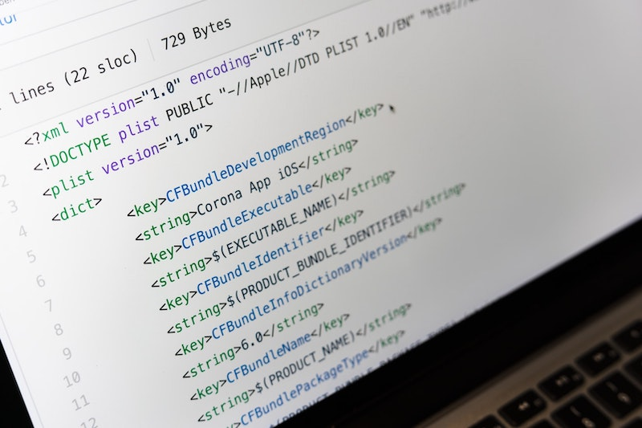
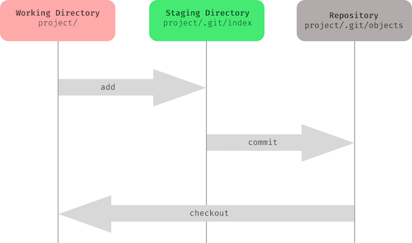

Git/GitHub 2 : Git en local
Introduction
Maintenant que tu connais les bases de ce qu'est git et comment créer un dépôt GitHub, il est temps d'apprendre comment nous pouvons utiliser git sur notre machine locale.

🤓 À la fin de cette quête, tu seras en mesure de:
- ✅ comprendre la structure d'un dépôt Git local (répertoire de travail, répertoire intermédiaire, dépôt)
- ✅ Initialiser un dépôt Git local sur ton ordinateur
- ✅ Sauvegarder les modifications de fichiers dans un dépôt Git local
Anatomie d'un dépôt local Git
Théorie
Contrairement à GitHub, qui est un site Web, Git est un logiciel que tu installes sur ton ordinateur.
Puisque tout se passe sur ton ordinateur, nous parlons de Git local.
Voici la structure typique d'un dépôt sur ta machine locale selon Git :

Les flèchesadd, commit et checkout correspondent aux commandes Git que tu verras plus tard, ne t'en préoccupe pas trop pour le moment !
Cette vidéo t'expliquera plus en détail la structure:
Entraine toi
Tu as peut-être déjà remarqué que le flux de travail Git (créer / modifier un fichier, valider pour enregistrer la modification) ressemble beaucoup à ce que tu as fait sur GitHub dans la quête précédente.
Sauf que GitHub propose une interface utilisateur graphique (GUI en abrégé), tandis que Git s'exécute en ligne de commande (CLI en abréviation anglaise), c'est-à-dire dans ton terminal.
Tu vas donc répéter ce que tu as déjà fait sur GitHub, mais cette fois sur ta machine locale! Avant tout, tu vas installer git sur ton système.
Sur Linux, git pourrait déjà être installé. Vérifie en entrant cette commande dans ton terminal => git --version (Le résultat doit être git version 2.**.*)
Sinon, tu vas devoir l'installer par toi même. Clique sur ce lien (https://git-scm.com/download/linux)
Dans ton terminal, vérifie ton installation en tapant git --version
Puis dans ton terminal, tu vas renseigner ton nom d'utilisateur et ton email (les mêmes que sur la plateforme github)
- Renseigne ton nom d'utilisateur:
git config --global user.name "FIRST_NAME LAST_NAME" - Renseigne ton email :
git config --global user.email "MY_NAME@example.com" - Ajoute aussi cette configuration (c'est un peu tôt pour t'expliquer en détail mais si tu ne le fais pas git va te poser la question quand tu essaieras de récupérer du code distant)
git config --global pull.rebase false - Enfin, termine par cette dernière configuration, qui configure git pour utiliser le nom "main" et non plus "master" comme branche par défaut, ce qui te facilitera la vie quand tu vas utiliser Github (qui lui utilise le nom "main")
git config --global init.defaultBranch main
Pour installer git sur Mac, clique sur ce lien (https://git-scm.com/download/mac)
Dans ton terminal, vérifie ton installation en tapant git --version
Puis dans ton terminal, tu vas renseigner ton nom d'utilisateur et ton email (les mêmes que sur la plateforme github)
- Renseigne ton nom d'utilisateur:
git config --global user.name "FIRST_NAME LAST_NAME" - Renseigne ton email :
git config --global user.email "MY_NAME@example.com" - Ajoute aussi cette configuration (c'est un peu tôt pour t'expliquer en détail mais si tu ne le fais pas git va te poser la question quand tu essaieras de récupérer du code distant)
git config --global pull.rebase false - Enfin, termine par cette dernière configuration, qui configure git pour utiliser le nom "main" et non plus "master" comme branche par défaut, ce qui te facilitera la vie quand tu vas utiliser Github (qui lui utilise le nom "main")
git config --global init.defaultBranch main
Pour Windows, tu dois installer un nouveau terminal : Git Bash.
Peut-être que tu l'as déjà installé sur ta machine. Si c'est le cas, tu peux passer à la suite. Sinon, clique sur ce lien (https://gitforwindows.org/) puis sur Download, exécute l'installeur et suis les instructions suivantes :
- 1
Etape 1
Accepte la licence d'utilisation.
- 2
Etape 2
Coche les options suivantes :
- Windows Explorer Integration
- Git Bash Here
- Git LFS (Large File Support)
- Associate .git* configuration files with the default text editor
- Associate .sh files to be run with Bash
- Add a Git Bash Profile to Windows Terminal
- Scalar (Git add-on to manage large-scale repositories)
- Windows Explorer Integration
- 3
Etape 3
Choisis : "Use Visual Studio Code as Git's default editor".
- 4
Etape 4
Coche "Override the default branch name for new repositories" et dans le champ de texte garde l'option proposée
main. - 5
Etape 5
Coche l'option recommandée "Git from the command line and also from 3rd-party software".
- 6
Etape 6
Coche l'option "Use bundled OpenSSH".
- 7
Etape 7
Coche l'option "Use the OpenSSL library".
- 8
Etape 8
Coche l'option "Checkout as-is, commit Unix-style line endings".
InfoCette option change le caractère invisible utilisé en fin de ligne qui est le CRLF pour Windows ("\r\n") et le LF pour Linux et Mac ("\n"). Sur un projet de groupe, avec des contributeurs pouvant avoir des OS différents, il est souvent préférable de configurer git localement pour faire des commits de type LF. Pour ce qui est du checkout, le "as-is" permettra d'éviter d'avoir des erreurs sur toutes les lignes sous Windows si un linter est configuré pour demander des fins de ligne en LF.
- 9
Etape 9
Coche l'option "Use MinTTY (the default terminal of MSYS2)".
- 10
Etape 10
Garde l'option par défaut ("Default (fast-forward or merge)").
- 11
Etape 11
Sélectionne "None", il n'est pas utile d'installer le Git Credential Manager car tu verras comment mettre en place l'authentification par clé SSH par la suite.
- 12
Etape 12
Coche les deux options :
- Enable file system caching
- Enable symbolic links
- 13
Etape 13
Coche "Enable experimental support for pseudo consoles". Tu peux aussi si tu le souhaites cocher la seconde option "Enable experimental built-in fyle system monitor".
ImportantIl est très important à ce stade de bien cocher la première option, sinon tu risques d'avoir des problèmes pour utiliser certaines fonctionnalités et devoir préfixer la majorité de tes commandes par winpty. En activant le support expérimental, tu pourras utiliser normalement le terminal comme sur un système Unix.
- 14
Etape 14
Procède à l'installation.
Dans ton terminal, vérifie ton installation en tapant git --version
Puis dans ton terminal, tu vas renseigner ton nom d'utilisateur et ton email (les mêmes que sur la plateforme github)
- Renseigne ton nom d'utilisateur:
git config --global user.name "FIRST_NAME LAST_NAME" - Renseigne ton email :
git config --global user.email "MY_NAME@example.com" - Ajoute aussi cette configuration (c'est un peu tôt pour t'expliquer en détail mais si tu ne le fais pas git va te poser la question quand tu essaieras de récupérer du code distant)
git config --global pull.rebase false - Enfin, termine par cette dernière configuration, qui configure git pour utiliser le nom "main" et non plus "master" comme branche par défaut, ce qui te facilitera la vie quand tu vas utiliser Github (qui lui utilise le nom "main")
git config --global init.defaultBranch main
☝️Résumé
- Git est un système de contrôle de version
- Git t'aide à conserver l'historique de tes fichiers et à travailler en équipe
- Github est une plateforme en ligne qui propose des services tels que l'hébergement de code mais c'est aussi un réseau social où tu peux participer à des projets open source, partager et découvrir de nouveaux projets.
Pour réaliser le challenge retiens bien ce qui suit :
- Quelle commande te permet de transformer un dossier classique en un projet git local ?
git init - Quelle est la commande pour placer un fichier dans le répertoire intermédiaire (staging) ?
git add - Quelle commande utilises tu pour réaliser un commit ?
git commit
💪 Challenge
- Crée un nouveau répertoire nommé
wild-gitet déplace-toi dedans depuis ton terminal - Quand tu t'es assuré d'être dans le bon dossier, initialise un nouveau dépôt git pour transformer ton dossier en un projet git local
- Crée un fichier vide nommé "wild.txt"
- Ajoute ce fichier à l'index de git (aussi appelé staging)
- Commite ce fichier avec le message suivant "At Wild Code School, we code without shoes."
- Écrit la commande suivante
git log -pet colle le résultat en solution du challenge
🧐 Critères de validation :
- [ ] La solution contient le message suivant : "At Wild Code School, we code without shoes."
Ressources partagées sur cette quête
- pdf avec des commandes de base pour GIThttps://people.irisa.fr/Anthony.Baire/git/git-for-beginners-handout.pdf
- Petit cheat sheet pour git bien pratiquehttps://training.github.com/downloads/fr/github-git-cheat-sheet/
- Comprendre le fonctionnement de Git de façon simplifiéehttps://www.youtube.com/watch?v=gp_k0UVOYMw
- Video FR sur "git init" "git add" et "git commit"https://www.youtube.com/watch?v=syXt9-AdfPs&t=319s
- commande Linuxhttps://doc.ubuntu-fr.org/git
- Vidéo en français qui explique bien tout le process pour travailler sur git et git hub en 30 minhttps://www.youtube.com/watch?v=hPfgekYUKgk&ab_channel=LaCapsule
- Condensé des raccourci Githttps://github.com/JustFS/cours-github/blob/master/versionner.png
- Quelques bases plutôt bien expliquée !https://gist.github.com/YannBouyeron/7f7c5486b5daa20c2a6080f67b2af344
- petite lecture sur les bases https://git-scm.com/book/fr/v2/Les-bases-de-Git-D%C3%A9marrer-un-d%C3%A9p%C3%B4t-Git
- Super ressource en anglais !https://www.youtube.com/watch?v=tRZGeaHPoaw&list=PLB4ymnBGpxDdK6Mr-RSZDaNIu3boHsZvQ&index=5&t=2465s
- Quelques explications sur les différentes commandes GIThttps://www.delftstack.com/fr/howto/git/
- Cours écrit sur les bases git dont la solution pour le message en autrehttps://www.atlassian.com/fr/git/tutorials/saving-changes/git-commit
- Pour ceux qui sont sur mac, ce lien est très très important !https://www.yoozio.com/erreur-git-apres-mise-a-jour-de-mac-os-high-sierra-xcrun-error-invalid-active-developer-path-85/
- Good explanation with example how to create local repo and work inhttps://www.youtube.com/watch?v=UFEby2zo-9E&ab_channel=LearnWebCode
- les étapes pour mettre en place l'authentification par clé SSH avec Githttps://docs.github.com/en/authentication/connecting-to-github-with-ssh
- Cheat sheet pour comande githttps://education.github.com/git-cheat-sheet-education.pdf
- Git and GitHub Tutorial (Jun22, 46min, time-stamped sections)https://www.youtube.com/watch?v=tRZGeaHPoaw
- Creer un fichier HTMLhttps://adeniyekehinde0.medium.com/creating-a-index-html-file-using-git-881007727411